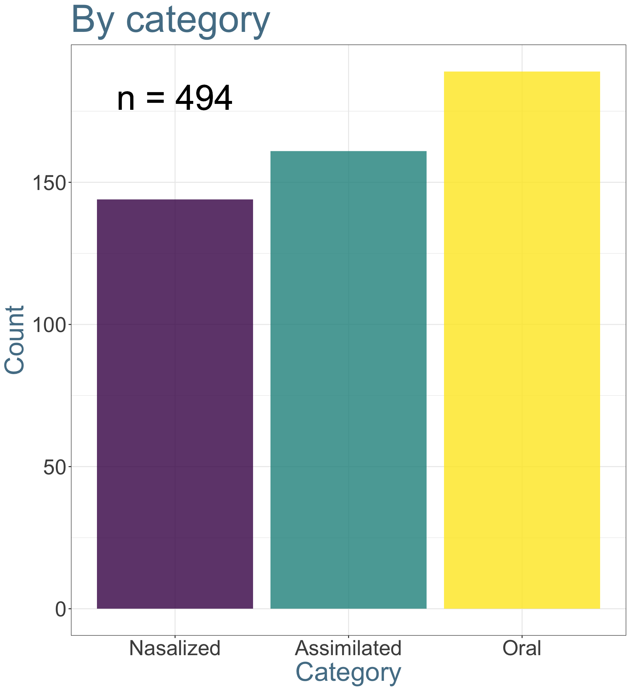
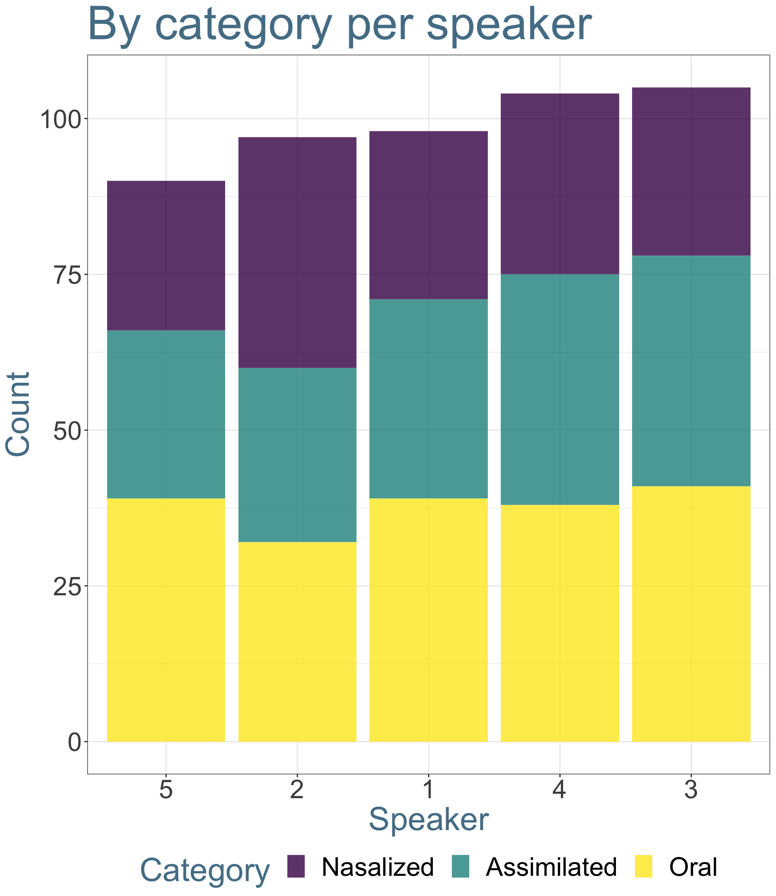
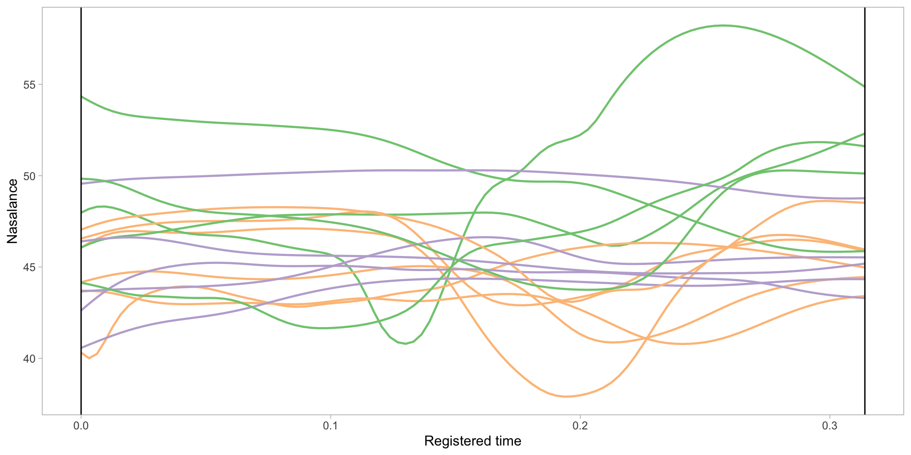
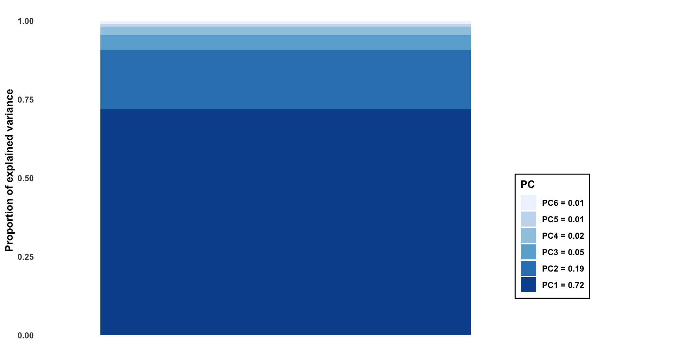
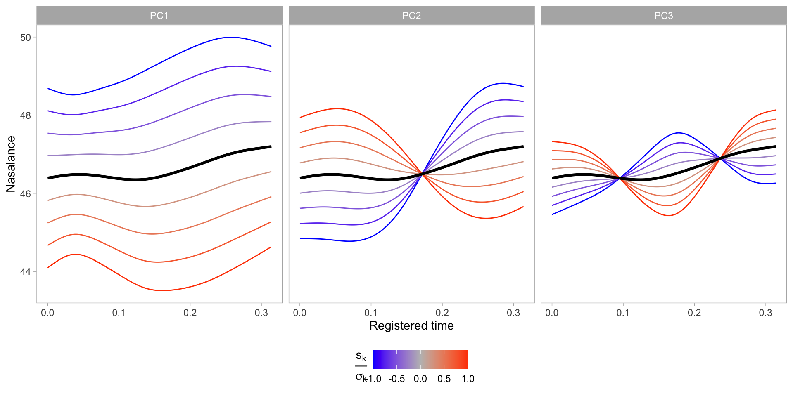
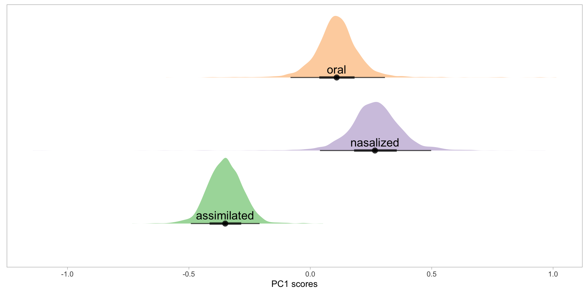
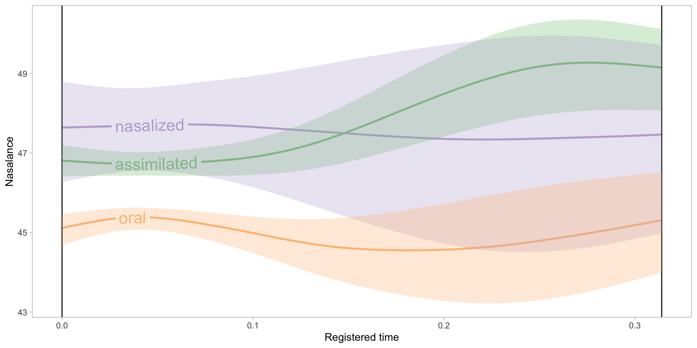
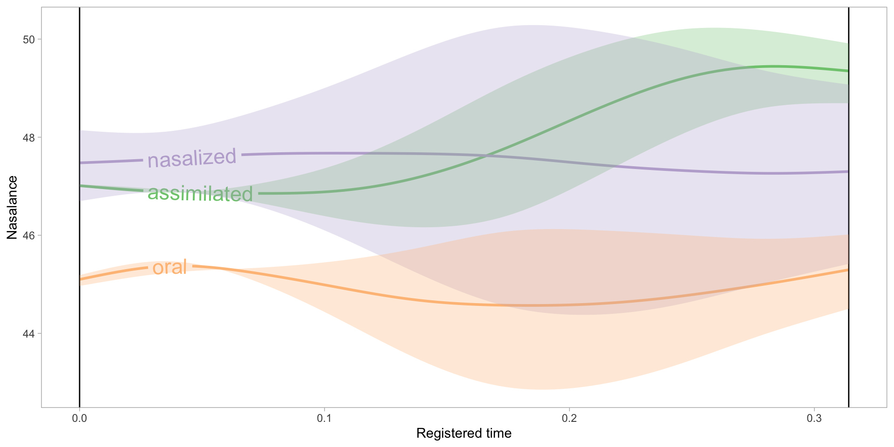

Does Basque have an impossible phonological opposition?
Ander Egurtzegi1 (with Andrea García-Covelo2 & Iñigo Urrestarazu-Porta3)
CNRS13 – IKER UMR5478123, IPS-LMU2, UPV/EHU3, UPPA23
15-11-2023
Glottal fricatives

How about a nasalized glottal approximant /h̃/?

Walker, Rachel & Pullum, Geoffrey K. 1999. Possible and impossible segments. Language 75(4). 764-780. doi:10.2307/417733
Typology
/h/ in the world’s languages
Moran, Steven & McCloy, Daniel (eds.). 2019. Phoible 2.0. http://phoible.org
/h̃/ in the world’s languages
Moran, Steven & McCloy, Daniel (eds.). 2019. Phoible 2.0. http://phoible.org
/h̃/ in the world’s languages
Moran, Steven & McCloy, Daniel (eds.). 2019. Phoible 2.0. http://phoible.org
An extremely rare opposition
If /h̃/ is so rare, then languages that include both /h/ and /h̃/…
Blevins, Juliette & Egurtzegi, Ander. 2023. Refining explanation in Evolutionary Phonology. Linguistic Typology 27. doi:10.1515/lingty-2021-0036
- Kwangali (kwan1273)
- ThiMbukushu (mbuk1240)
- Seimat (seim1238)
- North-Eastern Basque (basq1248)
The Basque case
Zuberoan Basque
Hualde, José Ignacio. 2003. Segmental phonology. A grammar of Basque, 15-65. Berlin & New York: Mouton de Gruyter.

Laryngeal approximants
Oral /h/, potentially present in Proto-Basque (hori ‘that’)
Nasalized /h̃/, from historical intervocalic n (Lat. (h)onore* > oh̃ore ‘honor’)
Geographic distribution:
/h/ -> Only in continental varieties
/h̃/ -> Only in Zuberoan & Mixean Basque
Restrictions:
Onset only
First 2 syllables only
Only 1 aspirated segment in each word
Some examples of /h/
| Example | Transcription | Gloss |
|---|---|---|
| hori | /hoɾi/ | ‘that (one)’ |
| harri | /hari/ | ‘stone’ |
| aho | /aho/ | ‘mouth’ |
| ehun | /ehun/ | ‘hundred’ |
| elhe | /elhe/ | ‘word’ |
| senhar | /s̺enhar/ | ‘husband’ |
Some examples of /h̃/
| Example | Transcription | Gloss |
|---|---|---|
| ahai | /ah̃ai̯/ | ‘ram’ |
| ahuntz | /ah̃unts̻/ | ‘goat’ |
| ihes | /ih̃es̺/ | ‘run away’ |
| ahate | /ah̃ate/ | ‘duck’ |
| dihaü | /dih̃ay/ | ‘money’ |
| uhue | /uh̃ue/ | ‘honor’ |
Let’s listen to them
Oral

Nasalized

Diachrony
Historical origin
*n > /h̃/ /V_V
mih̃i ‘tongue’ ~ min-gain ‘upper part of the tongue’
*ardah̃o ‘wine’ ~ ardan-degi ‘winery’
*gaztah̃a ‘cheese’ ~ gaztan-bera ‘curd’
But mihi, ardo & gazta in Standard Basque
Chronology

500-800 AD
Lenition of intervocalic /n/
/VnV/ > /Vh̃V/
1000-1300 AD
Loss of laryngeals
in post-tonic last syllable
in (North) Eastern varieties
/hV.’hV.hV/ > /hV.hV.V/
Chronology
1600-1900 AD
Loss of nasality in aspirates
in most Basque varieties
/Vh̃V/ > /VhV/
Today
Nasalization of aspirates
preserved in Zuberoan Basque
ehi ‘finger’ vs. eh̃i ‘easy’
Romance languages
*n > ∅ /V_V in Romance
Galician-Portuguese
| Latin | Gal-Port. | Gloss |
|---|---|---|
| plānum | chão | ‘flat’ |
| tenebrās | tẽevras | ‘darkness’ |
| lūnam | lũa | ‘moon’ |
| regīnam | raĩa | ‘queen’ |
| gallīnam | galĩa | ‘hen’ |
*n > ∅ /V_V in Romance
Corsican
| Chisa Corsican | Galeria Corsican | Gloss |
|---|---|---|
| [ˈpanɛ] | [ˈpãe] | ‘bread’ |
| [ˈpona] | [ˈpe] | ‘to put’ |
| [ˈvĩnu] | [ˈbĩu] | ‘wine’ |
| [ˈɔ̃ne] | [ɔ̃] | (suffix) |
Dalbera-Stefanaggi, Marie-José. 1989. La nasalisation en corse. Revue de linguistique romane 53. 145-158.
*n > ∅ /V_V in Romance
Medieval Gascon
| Latin | Gascon | Gloss |
|---|---|---|
| Dominicus | Domeeg | (personal name) |
| gallīnas | garias | ‘hen (pl.)’ |
| abellanētum | aueraed | ‘hazelnut grove’ |
| camināre | camiar | ‘to walk’ |
| Castanētum | Castahied | (place name) |
Luchaire, Achille. 1879. Etudes sur les idiomes pyrénéens de la région française. Paris: Maisonneuve.
*n > ∅ /V_V in Romance
Sardinian
| Sard. Var. A | Sard. Var. B | Sard. Var. C |
|---|---|---|
| [ˈpanɛ] | [ˈpãi] | - |
| [ˈkɛna] | [ˈtʃɛ̃a] | - |
| [ˈaʒina] | [ˈaʒĩa] | [ˈaʒĩʔa] |
| [ˈluna] | [ˈlũa] | [ˈlũʔa] |
Molinu, Lucia. 2022. Nasalizzazione e lenizione in sardo meridionale. Paper presented at CILPR.
Lack of aspiration in Romance?
Scarce evidence for an aspirate outcome in Romance.
Blevins, Juliette & Egurtzegi, Ander. 2023. Refining explanation in Evolutionary Phonology. Linguistic Typology 27. doi:10.1515/lingty-2021-0036
Egurtzegi, Ander. 2023. /h̃/ hasperen sudurkarituaren inguran [On the nasalized aspiration /h̃/]. International Journal of Basque Linguistics and Philology 57.
- [h] in Medieval Gascon?
- [ʔ] in Sarrabus/Isili Sardinian
Why did /h̃/ develop in Basque? / Why was it maintained?
- /h/ was likely part of the language before /h̃/ developed.
- [h̃] was likely an allophonic variant of /h/.
Phonology
Establishing the /h̃/ vs. /h/ opposition
Minimal pair/triplet:
ehi /ˈehi/ ‘finger’
vs.
ehi /ˈeh̃i/ ‘easy’
vs.
ei /ˈe.i/ ~ /ei̯/ ‘ill’
/Vh̃V/ or /ṼhṼ/?
Egurtzegi, Ander. 2018. On the phonemic status of nasalized /h̃/ in Modern Zuberoan Basque. Linguistics 56. 1353-1367. doi:10.1515/ling-2018-0024
Zuberoan only shows contrastive nasalization in word-final stressed vowels.
Mixean does not show contrastive nasalization in vowels.
Nasalization spread / assimilation
Egurtzegi, Ander. 2018. On the phonemic status of nasalized /h̃/ in Modern Zuberoan Basque. Linguistics 56. 1353-1367. doi:10.1515/ling-2018-0024
All vowels surrounding nasal consonants are contextually nasalized in Basque:
ona [ˈõnã] ‘the good’
ama [ˈãmã] ‘mother’
uhue [ũˈh̃ũẽ] ‘honor’
ahate [ãˈh̃ãte] ‘duck’
Nasalization spread / assimilation
Egurtzegi, Ander. 2018. On the phonemic status of nasalized /h̃/ in Modern Zuberoan Basque. Linguistics 56. 1353-1367. doi:10.1515/ling-2018-0024
| Example | Transcription | Gloss |
|---|---|---|
| janhari | [jãnˈɦ̃ãi̯] | ‘food’ |
| sinhets | [s̺ĩɲˈɦ̃ẽts̺] | ‘to believe’ |
| nahi | [ˈnãɦ̃ĩ] | ‘to want’ |
| mehe | [ˈmẽɦ̃ẽ] | ‘thin’ |
| senhar | [ẽɦ̃ũn] | ‘hundred’ |
| lehen | [lẽɦ̃ẽn] | ‘first’ |
Background & Research question
Previous phonetic research
No research on the opposition in Basque
No research on the opposition in any other language
No nasalance-based study of [h̃]
Research is pressing
Basque is an endangered language (vulnerable according to UNESCO)
(Almost?) All Basque varieties other than the standard
Particularly the Basque varieties spoken in the Northern Basque Country in France
Research questions
Are /h/ and /h̃/ still found in Basque?
Most likely varieties:
Mixean Basque
Zuberoan Basque
If present, let’s describe the opposition
1st Study
Amiküze (Mixe)

Materials


Camino, I. 2016. Amiküze eskualdeko heskuara [The Basque of the region of Amiküze (Mixe)]. Bilbao: Euskaltzaindia.
Data


Problem: Measuring acoustic nasality 

Styler, W. 2017. On the acoustical features of vowel nasality in English and French, J. Acoust. Soc. Am. 142(4), 2469–2482.
Acoustic analysis
20 explicit measurements of vocalic nasality (Styler 2017):
- F1, F2, F3 frequency
- F1, F2, F3 bandwidth
- A1, A2, A3 amplitude
- P0, P1, P2 amplitude
- P0, P1 prominence
- A1-P0, A1-P1, A1-P2
- H1-H2, A3-P0, overall spectral center of gravity
Measurements taken in Praat and R (using wrassp; Winkelmann et al. 2017)
Additionally: MFCCs 2-12 (OpenSMILE)
All measurements taken at 5ms intervals
Styler, W. 2017. On the acoustical features of vowel nasality in English and French, J. Acoust. Soc. Am. 142(4), 2469–2482.
Winkelmann, R., Bombien, L. & Scheffers, M. 2017. Wrassp: Interface to the ‘ASSP’ Library.
PCA transformation & data reduction
For each speaker, the 31-feature set was submitted to a principal components analysis (PCA) model
The number of PCs that cumulatively explained at least 80% of the total variance were retained for each speaker:
- 11-13 PCs
- Mean: 12.3, SD: 0.82
The scores for the retained PCs were used as linear predictors in speaker-specific models built to distinguish oral and nasalized vocalic contexts
Egurtzegi, Ander & Carignan, Christopher. 2020. A typological rarity: the /h/ vs. /h̃/ contrast of Mixean Basque. LabPhon 17.
Oral-nasal model training & prediction
“Unambiguously” oral and nasalized tokens were selected:
- Nasalized: 10% in NVC, 50% in NVN, and 90% in CVN
- Oral: 10%, 50%, and 90% in CVC
Average training data per speaker: 258 nasalized tokens, 222 oral tokens
Logistic regression models (with PC score IVs) built for each speaker
Hosmer and Lemeshow goodness of fit tests
LME with random intercepts by speaker
Pair-wise post hoc tests with Tukey alpha correction
Egurtzegi, Ander & Carignan, Christopher. 2020. A typological rarity: the /h/ vs. /h̃/ contrast of Mixean Basque. LabPhon 17.
Results

Egurtzegi, Ander & Carignan, Christopher. 2020. A typological rarity: the /h/ vs. /h̃/ contrast of Mixean Basque. LabPhon 17.
2nd Study
Larraine
Experimental design
Stimuli + SpeechRecorder + Nasalance device
Stimuli: wordlist
| /h/ | /h̃/ | Nh / NVh / hVN |
|---|---|---|
| behi ‘cow’ | ahate ‘duck’ | uɲhu ‘onion’ |
| bihotz ‘heart’ | ihaute ‘carnival’ | lehen ‘first, before’ |
| ehi ‘finger’ | ehi ‘easy’ | nihaur ‘me, myself’ |
SpeechRecorder: prompting


Nasalance device

Wooden plate
Data
Participants
5 participants
4 male : 1 female
60-70 years old
L1 Zuberoan Basque
L2 French at age 5 (school)


Recordings


Nasalance
→
→
\[ Amplitude \]
→
→
\[ A_n \]
\[ A_o \]
↓
↓
\[ \frac{A_n}{A_n + A_o} \times 100 \]
Analysis
Bayesian generalized mixed-effects model with brms
Egurtzegi, A., A. García-Covelo & I. Urrestarazu-Porta. 2023. “A nasalance-based study of the /h/ vs. /h̃/ opposition in Zuberoan Basque”. In Skarnitzl & Volín (eds.), Proceedings of ICPhS 20, 3427-3431.

Dependent variable: z-scored nasalance
Independent variables: aspirate category, trial
Correlated varying intercept & slope: speaker, word
Weakly informative priors
Further specs
8 chains x 10 000 iterations (5000 warm-up)
delta = 0.999
maximum tree depth = 12
Posterior distributions
Egurtzegi, A., A. García-Covelo & I. Urrestarazu-Porta. 2023. “A nasalance-based study of the /h/ vs. /h̃/ opposition in Zuberoan Basque”. In Skarnitzl & Volín (eds.), Proceedings of ICPhS 20, 3427-3431.

Posterior distributions
Egurtzegi, A., A. García-Covelo & I. Urrestarazu-Porta. 2023. “A nasalance-based study of the /h/ vs. /h̃/ opposition in Zuberoan Basque”. In Skarnitzl & Volín (eds.), Proceedings of ICPhS 20, 3427-3431.
Discussion
Egurtzegi, A., A. García-Covelo & I. Urrestarazu-Porta. 2023. “A nasalance-based study of the /h/ vs. /h̃/ opposition in Zuberoan Basque”. In Skarnitzl & Volín (eds.), Proceedings of ICPhS 20, 3427-3431.
Etymologically oral aspirates ≠ Assimilated nasal aspirates ≈ Etymologically nasalized aspirates
There is an opposition between /h/ and /h̃/!!!
Discussion
Egurtzegi, A., A. García-Covelo & I. Urrestarazu-Porta. 2023. “A nasalance-based study of the /h/ vs. /h̃/ opposition in Zuberoan Basque”. In Skarnitzl & Volín (eds.), Proceedings of ICPhS 20, 3427-3431.
Etymologically oral aspirates ≠ Assimilated nasal aspirates ≈ Etymologically nasalized aspirates
There is an opposition between /h/ and /h̃/!!!
BUT…
Not all speakers maintain the opposition to the same extent
Discussion
Egurtzegi, A., A. García-Covelo & I. Urrestarazu-Porta. 2023. “A nasalance-based study of the /h/ vs. /h̃/ opposition in Zuberoan Basque”. In Skarnitzl & Volín (eds.), Proceedings of ICPhS 20, 3427-3431.
Etymologically oral aspirates ≠ Assimilated nasal aspirates ≈ Etymologically nasalized aspirates
There is an opposition between /h/ and /h̃/!!!
BUT…
Not all speakers maintain the opposition to the same extent
Some lexical items have lost nasalization
Discussion
Egurtzegi, A., A. García-Covelo & I. Urrestarazu-Porta. 2023. “A nasalance-based study of the /h/ vs. /h̃/ opposition in Zuberoan Basque”. In Skarnitzl & Volín (eds.), Proceedings of ICPhS 20, 3427-3431.
Etymologically oral aspirates ≠ Assimilated nasal aspirates ≈ Etymologically nasalized aspirates
There is an opposition between /h/ and /h̃/!!!
BUT…
Not all speakers maintain the opposition to the same extent
Some lexical items have lost nasalization
There is an opposition, but it is receding
Dynamic analysis with fPCA
Work in progress
Waves have different durations

Waves with registered time
Results of fPCA
What variation does each PC capture?
Modelling PC1 scores
| etym_asp | emmean | lower.HPD | upper.HPD |
|---|---|---|---|
| assimilated | -0.7363393 | -1.1562409 | -0.2801506 |
| nasalized | -0.4691249 | -1.5250014 | 0.7226606 |
| oral | 0.9772860 | 0.4972216 | 1.5185178 |
Posterior distribution of PC1 scores

Waves reconstructed with PC1

Modelling PC2 scores
| etym_asp | emmean | lower.HPD | upper.HPD |
|---|---|---|---|
| assimilated | -0.3503060 | -0.47628012 | -0.1989825 |
| nasalized | 0.2663018 | 0.03689933 | 0.4889086 |
| oral | 0.1087322 | -0.08299959 | 0.3058489 |
Posterior distribution of PC2 scores
Waves reconstructed with PC1 and PC2
Modelling PC3 scores
| etym_asp | emmean | lower.HPD | upper.HPD |
|---|---|---|---|
| assimilated | 0.08153864 | -0.08457668 | 0.2548145 |
| nasalized | -0.06823417 | -0.26750860 | 0.1754418 |
| oral | -0.00615058 | -0.20369904 | 0.2071757 |
Posterior distribution of PC3 scores

Waves reconstructed with PC1, PC2 and PC3
PC1 captured the relevant variation

It’s not over!
References
- Walker, Rachel & Pullum, Geoffrey K. 1999. Possible and Impossible Segments. Language 75(4). 764-780. doi: 10.2307/417733
Phonologic literature on Basque nasalized aspirates
Hualde, José Ignacio. 1993. Topics in Souletin phonology. In J.I Hualde & J. Ortiz de Urbina (eds.) Generative Studies in Basque Linguistics , pp. 289-327. John Benjamins.
Egurtzegi, Ander. 2013. Diferentes tipos de aspiración en vasco (con análisis espectrales del dialecto suletino actual) [Different kinds of aspiration in Basque (with spectral analyses of the modern Zuberoan dialect)]. In Blasco et al. (eds.), Iberia e Sardegna . Firenze: Le Monnier. 151–169.
Egurtzegi, Ander. 2018. On the phonemic status of nasalized /h̃/ in Modern Zuberoan Basque. Linguistics 56. 1353-1367. doi: 10.1515/ling-2018-0024
Egurtzegi, A., A. García-Covelo & I. Urrestarazu-Porta. 2023. “A nasalance-based study of the /h/ vs. /h̃/ opposition in Zuberoan Basque”. In Skarnitzl & Volín (eds.), Proceedings of ICPhS 20, 3427-3431.
Egurtzegi, Ander & Carignan, Christopher. 2020. A typological rarity: the /h/ vs /h̃/ contrast of Mixean Basque. Labphon 17.
Egurtzegi, Ander. 2023. /h̃/ hasperen sudurkarituaren inguran [On the nasalized aspiration /h̃/]. International Journal of Basque Linguistics and Philology 57.
Stimuli source
- Larrasquet, Jean. 1939. Le Basque de la Basse-Soule Orientale . Paris: C. Klincksieck.
Software and R packages
Boersma, Paul & Weenink, David. 2022. Praat. Doing phonetics by computer . https://www.praat.org
Bürkner, Paul-Christian. 2017. brms: An R Package for Bayesian Multilevel Models Using Stan. Journal of Statistical Software 80(1). 1-28. doi: 10.18637/jss.v080.i01
Draxler, Christoph & Jänsch, Klaus. 2004. SpeechRecorder - a Universal Platform Independent Multi-Channel Audio Recording Software. In Proc. of LREC. 559-562. https://www.bas.uni-muenchen.de/Bas/software/speechrecorder/
R Core Team. 2022. R: A language and Environment for Statistical Computing . https://www.R-project.org
Wickhan, Hadley et al. 2019. Welcome to the tidyverse. Journal of Open Source Software 43(4). doi: 10.21105/joss.01686